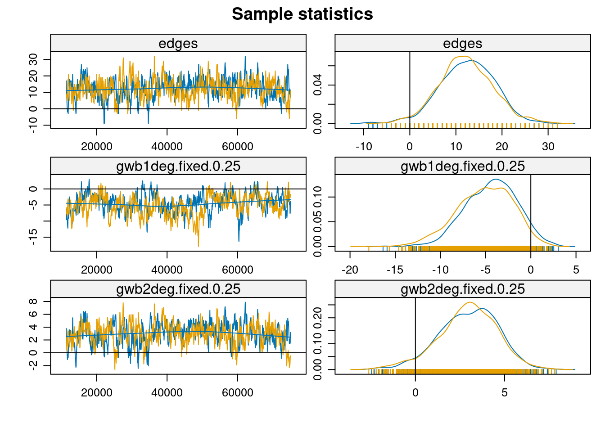
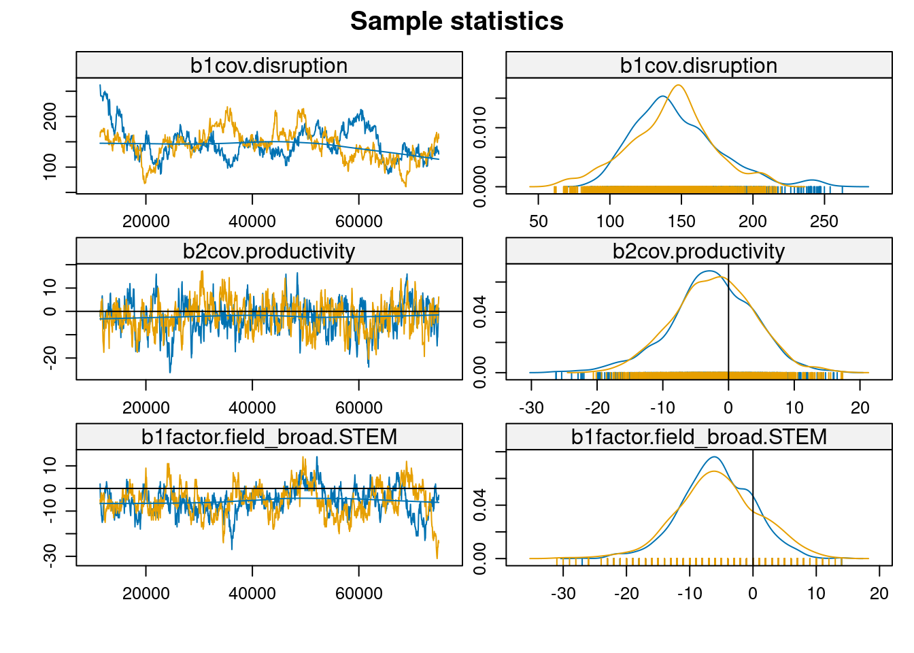
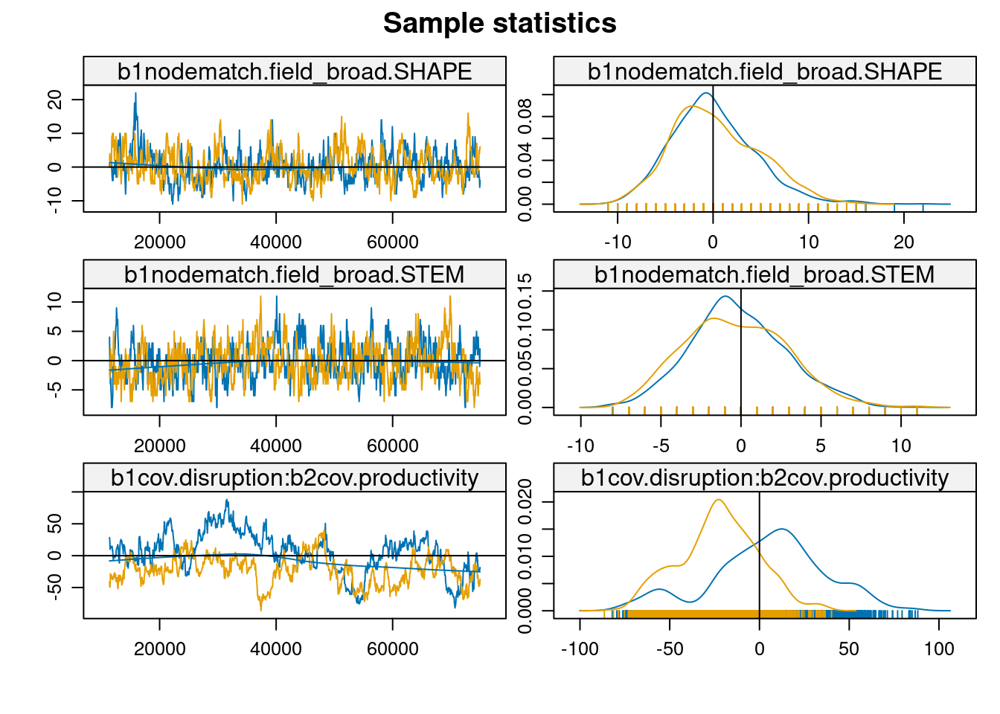

# 1. Cargar paquetes necesarios
library(osfr)
library(tidyverse)
library(ergm)
library(Matrix)
library(network)
library(ggraph)
library(tidygraph)
library(kableExtra)
library(igraph)
library(sna)
# Configurar tema para visualizaciones
theme_set(theme_minimal())Disrupción y Estructura en redes de producción cietífica
Un Análisis ERGM Modo-2 al campo de la Ciencia de la Sustentabilidad
R
Networks
Two mode
ERGM
Scientific networks
Introducción
La ciencia de la sustentabilidad requiere urgentemente de innovación transformadora para abordar desafíos socio-ambientales complejos. Comprender cómo emerge la investigación disruptiva en las redes científicas es, por tanto, crucial. Li, et. al. (2024) han demostrado una relación inversa entre productividad y disrupción científica, pero los mecanismos estructurales subyacentes a este fenómeno permanecen poco claros, particularmente en el contexto de redes modo-2 que vinculan autores y publicaciones.
La sociología del conocimiento científico ha identificado históricamente la dualidad fundamental entre las estructuras sociales de producción y el contenido del conocimiento producido (Mannheim 1936; Durkheim [1893] 1933). Esta dualidad se manifiesta particularmente en campos emergentes como la ciencia de la sustentabilidad, donde la innovación conceptual y la estructura social de producción se constituyen mutuamente. A diferencia de visiones que enfatizan la fragmentación disciplinar o la mera acumulación de capital científico, proponemos que la producción de conocimiento científico emerge de la interacción entre mecanismos de cohesión estructural, procesos de legitimación y dinámicas de innovación disruptiva.
El trabajo seminal de Gondal (2011) sobre campos emergentes identifica cómo la incertidumbre inicial y la necesidad de legitimación producen una centralización temprana que estructura el desarrollo posterior del campo. Sin embargo, esta centralización no es simplemente un proceso de acumulación de capital científico como sugería Bourdieu (1975), sino que refleja una necesidad estructural más profunda: establecer las bases sociales compartidas que permiten la evaluación y validación del conocimiento en condiciones de alta incertidumbre. Esto se vincula con lo que Kuhn (1970) denominaba “ciencia normal” - la necesidad de establecer paradigmas que permitan el trabajo científico acumulativo. Sin embargo, mientras Kuhn veía los paradigmas principalmente como estructuras cognitivas, el análisis de redes modo-2 revela que estos se sostienen en estructuras relacionales específicas que emergen de patrones sistemáticos de colaboración. Moody (2004) profundiza esta comprensión al demostrar que la cohesión estructural que emerge en las redes de colaboración no es un simple subproducto de la centralización, sino un mecanismo generativo fundamental. Esta cohesión estructural permite la integración del conocimiento incluso en condiciones de alta especialización a través de lo que Friedkin (1998) denominó “overlapping consensus” - consensos parciales superpuestos que facilitan la comunicación entre diferentes tradiciones especializadas.
Los hallazgos de Wu et al. (2019) sobre equipos pequeños y disrupción científica revelan una tensión productiva inherente a los campos científicos: mientras la cohesión estructural facilita la acumulación y validación del conocimiento, la innovación disruptiva requiere posiciones estructurales que permitan cierta autonomía respecto a los paradigmas dominantes. Esta tensión no es una simple contradicción, sino un principio organizador fundamental de los campos científicos que se resuelve a través de mecanismos de diferenciación integrada.
En el caso específico de la ciencia de la sustentabilidad, la urgencia transformadora modifica la evolución típica de los campos científicos. La necesidad apremiante de innovación para abordar desafíos socio-ambientales complejos genera una mayor tolerancia temprana a innovaciones disruptivas y promueve estructuras más distribuidas de producción de conocimiento. Esto resulta particularmente evidente en la relación inversa entre productividad y disrupción identificada por Li et al. (2024), donde los actores centrales tienden a desarrollar líneas establecidas mientras que la innovación disruptiva emerge frecuentemente desde posiciones periféricas.
La dimensión temporal es crucial para entender cómo estos mecanismos operan en diferentes etapas del desarrollo del campo. Los campos científicos emergentes atraviesan fases de legitimación inicial, consolidación y diferenciación, y eventual maduración e integración dinámica. En cada fase, la relación entre posición estructural y capacidad disruptiva evoluciona de manera diferenciada, mostrando inicialmente una fuerte centralización para establecer legitimidad, seguida de una diversificación de las fuentes de innovación y eventualmente alcanzando un equilibrio dinámico entre desarrollo y disrupción.
Mecanismos Generativos y Propiedades Emergentes
Los hallazgos de Wu et al. (2019) sobre equipos pequeños y disrupción científica revelan una tensión productiva inherente a los campos científicos: mientras la cohesión estructural facilita la acumulación y validación del conocimiento (Moody 2004), la innovación disruptiva requiere posiciones estructurales que permitan cierta autonomía respecto a los paradigmas dominantes. Esta tensión no es una simple contradicción, sino un principio organizador fundamental de los campos científicos.
Esta dinámica se resuelve a través de lo que denominamos “mecanismos de diferenciación integrada”:
La cohesión estructural (Moody 2004):
- Provee el sustrato necesario para la comunicación y validación del conocimiento
- Facilita la difusión de estándares metodológicos y criterios de evaluación
- Permite la especialización sin fragmentación total
- Opera a través de patrones sistemáticos de colaboración que crean puentes entre diferentes áreas
La centralización temprana (Gondal 2011):
- Establece estándares y criterios de evaluación compartidos
- Reduce la incertidumbre inicial sobre qué constituye conocimiento válido
- Crea puntos de referencia comunes para el desarrollo del campo
- Facilita la acumulación inicial de conocimiento validado
La autonomía estructural (Wu, Wang, and Evans 2019):
- Permite la exploración de nuevas direcciones teóricas y metodológicas
- Se asocia con posiciones periféricas o semi-periféricas en la red
- Facilita el cuestionamiento de supuestos establecidos
- Opera principalmente a través de equipos pequeños con mayor libertad para innovar
Estos mecanismos producen propiedades emergentes que caracterizan el campo como totalidad:
H1: La estructura reticular autor-artículo mostrará patrones de cohesión estructural (medida a través de bicomponentes) que coexisten con y facilitan la emergencia de innovación disruptiva desde posiciones periféricas. Esta hipótesis sugiere que, contrario a visiones que ven la fragmentación o la centralización como estados finales inevitables, los campos científicos desarrollan estructuras que permiten simultáneamente la integración y la innovación.
La Diferenciación como Proceso Relacional
La diferenciación entre campos STEM y SHAPE emerge no tanto de divisiones epistemológicas fundamentales sino de diferentes regímenes de validación del conocimiento que se cristalizan en patrones distintivos de vinculación autor-artículo. Estos regímenes reflejan diferentes:
- Criterios de validación empírica
- Estructuras de argumentación aceptadas
- Formas legítimas de construcción teórica
- Patrones típicos de colaboración
- Mecanismos de acreditación y reconocimiento
Esto nos lleva a:
H2: Los campos mostrarán diferentes patrones de cohesión estructural que reflejan sus regímenes específicos de validación, manteniendo sin embargo suficiente integración para permitir la innovación interdisciplinaria. Esta hipótesis se basa en la observación de Moody (2004) de que la cohesión estructural permite la especialización sin fragmentación, pero reconoce que los mecanismos específicos de cohesión varían sistemáticamente entre campos.
Temporalidad y Evolución en Campos Científicos Emergentes
La dimensión temporal es crucial para entender cómo los mecanismos generativos operan en diferentes etapas del desarrollo de campos emergentes. Siguiendo a Gondal (2011), la evolución de estos campos no es lineal sino que exhibe tensiones dinámicas entre legitimación, innovación y estructuración.
Fases de Desarrollo Estructural
- Fase de Emergencia y Legitimación Inicial:
- Alta incertidumbre sobre criterios de validación
- Centralización temprana como mecanismo de reducción de incertidumbre
- Dependencia de autoridades externas para legitimación
- Formación inicial de grupos pequeños altamente cohesivos
- Fase de Consolidación y Diferenciación:
- Desarrollo de criterios internos de validación
- Emergencia de estructuras centro-periferia
- Diversificación de líneas de investigación
- Formación de subcampos especializados mientras se mantiene cohesión general
- Fase de Maduración e Integración Dinámica:
- Equilibrio entre innovación disruptiva y desarrollo acumulativo
- Estructuras de colaboración más complejas y multinivel
- Mecanismos establecidos para integrar conocimiento diverso
- Capacidad dual para mantener coherencia y generar disrupciones
El Caso de la Ciencia de la Sustentabilidad
La ciencia de la sustentabilidad representa un caso particularmente relevante de campo científico emergente por varias razones:
- Urgencia Transformadora:
- Necesidad apremiante de innovación para abordar desafíos socio-ambientales complejos
- Tensión intrínseca entre la urgencia de soluciones y la necesidad de rigor científico
- Demanda de disrupciones que transformen paradigmas establecidos
- Complejidad Estructural:
- Naturaleza inherentemente interdisciplinaria
- Necesidad de integrar ciencias naturales y sociales
- Múltiples comunidades epistémicas con diferentes tradiciones
- Dinámica Centro-Periferia Específica:
- Li et al. (2024) identifican una relación inversa entre productividad y disrupción
- Los actores centrales tienden a desarrollar líneas establecidas
- La innovación disruptiva emerge frecuentemente desde posiciones periféricas
Esto nos lleva a proponer:
H3a: La relación entre posición estructural y capacidad disruptiva evolucionará de manera diferenciada según la fase de desarrollo del campo, mostrando:
- Centralización inicial para establecer legitimidad
- Posterior diversificación de fuentes de innovación
- Eventual equilibrio dinámico entre desarrollo y disrupción
H3b: En el campo específico de la ciencia de la sustentabilidad, la urgencia transformadora modificará esta evolución típica, produciendo:
- Mayor tolerancia temprana a innovaciones disruptivas
- Estructuras más distribuidas de producción de conocimiento
- Mecanismos acelerados de validación y difusión
Implicaciones para la Estructura de Colaboración
Esta conceptualización temporal tiene importantes implicaciones para entender cómo evolucionan las estructuras de colaboración:
- Evolución de Patrones Colaborativos:
- De colaboraciones principalmente diádicas a estructuras más complejas
- Desarrollo de “brokers” que conectan diferentes comunidades epistémicas
- Emergencia de equipos especializados en diferentes tipos de contribución
- Transformación de Mecanismos de Legitimación:
- De dependencia externa a criterios internos de validación
- Desarrollo de estándares específicos del campo
- Evolución de mecanismos de evaluación que balancean rigor e innovación
- Dinámica de Innovación:
- as fuentes de innovación se diversifican con el tiempo
- os roles estructurales (central vs. periférico) se vuelven más fluidos
- merge una división del trabajo entre desarrollo y disrupción
Esta perspectiva temporal enriquece nuestra comprensión de cómo los mecanismos generativos identificados anteriormente operan y evolucionan a lo largo del tiempo, sugiriendo que la capacidad de un campo para mantener su vitalidad depende de su habilidad para institucionalizar tensiones productivas entre diferentes modos de producción de conocimiento.
Metodología
La complejidad teórica identificada en la producción de conocimiento en campos científicos emergentes requiere una estrategia metodológica que integre diferentes aproximaciones analíticas. Proponemos combinar el análisis de cohesión estructural desarrollado por Moody (2004) con modelos exponenciales de grafos aleatorios (ERGMs) modo-2 siguiendo a Gondal (2011), para examinar cómo la dualidad entre productores y productos del conocimiento genera patrones específicos de colaboración y disrupción.
Cohesión Estructural y Patrones de Colaboración
Moody (2004) demuestra que el análisis de bicomponentes en redes de coautoría proporciona una medida robusta de cohesión estructural que permite identificar cómo la especialización disciplinar coexiste con la integración del conocimiento. Un bicomponente, al requerir múltiples caminos independientes entre cada par de nodos, identifica grupos que mantienen su conectividad incluso ante la remoción de miembros individuales. Esta propiedad es particularmente relevante para entender la robustez de las estructuras de colaboración científica. Siguiendo esta aproximación, analizaremos primero la red unimodal de coautoría para:
- Identificar la evolución del componente gigante y su relación con la fragmentación disciplinar
- Examinar la distribución y composición de bicomponentes como indicadores de cohesión
- Evaluar la robustez de las estructuras de colaboración a través del tiempo
Dualidad Estructural y ERGMs Modo-2
Complementando el análisis de cohesión, los ERGMs modo-2 desarrollados por Gondal (2011) permiten modelar explícitamente la dualidad entre autores y artículos que caracteriza la producción científica. Esta aproximación modela la probabilidad de observar un vínculo autor-artículo como función de:
- Características de los autores (productividad, centralidad previa)
- Atributos de los artículos (disrupción, impacto)
- Configuraciones estructurales locales (patrones de coautoría)
- Variables contextuales (campo disciplinar, período temporal)
Estrategia de Modelamiento Integrada
Nuestra estrategia procede en tres etapas:
- Análisis de Cohesión Estructural:
- Identificación de componentes y bicomponentes
- Evaluación de patrones de especialización vs integración
- Análisis de evolución temporal de estructuras cohesivas
- Modelamiento ERGM Modo-2:
- Especificación base con efectos de grado y homofilia
- Incorporación de términos estructurales complejos
- Modelamiento de interacciones entre disrupción y posición estructural
- Integración de Resultados:
- Vinculación entre patrones macro de cohesión y mecanismos generativos locales
- Evaluación de cómo diferentes configuraciones estructurales facilitan o inhiben la innovación disruptiva
- Análisis de evolución temporal de mecanismos relacionales
Operacionalización y Medición
Disrupción Científica: Siguiendo a Wu et al. (2019) y Li et al. (2019), medimos la disrupción a través de patrones de citación que indican en qué medida un artículo reorienta la atención del campo hacia nuevas direcciones.
Cohesión Estructural: Operacionalizada a través de:
- Tamaño y composición de bicomponentes
- Distribución de k-componentes
- Medidas de conectividad robusta
Posición Estructural: Capturada mediante:
- Centralidad en la red de coautoría
- Patrones de vinculación autor-artículo
- Pertenencia a componentes cohesivos
Validación y Control La validez del análisis se asegura mediante:
Controles por factores exógenos:
- Efectos temporales
- Diferencias disciplinares
- Variación institucional
Diagnósticos específicos:
- Convergencia de modelos ERGM
- Bondad de ajuste de configuraciones estructurales
- Robustez a diferentes especificaciones
Validación cruzada entre métodos:
- Consistencia entre patrones macro y micro
- Triangulación de resultados
- Evaluación de hipótesis alternativas
Esta estrategia metodológica integrada permite examinar cómo la dualidad estructural característica de la producción científica genera simultáneamente cohesión disciplinar e innovación disruptiva, proporcionando una comprensión más profunda de la evolución de campos científicos emergentes como la ciencia de la sustentabilidad.
Configuración Inicial y Carga de Datos
# 2. datos
load("/home/rober/Documents/rcantillan.github.io/blog/posts/04-twomode-ergm/data/b3_fromlatam_1990_2000.RData")
# 3. Filtrar datos de Latam
#b3_fromlatam <- b3_joined %>%
# filter(DocType == "Journal") %>%
# group_by(PaperID) %>%
# filter(latam_prop >= 0.5 |
# any(AuthorSequenceNumber == 1 & is_latam == 1)) %>%
# ungroup()
#
## 4. Filtrar por tiempo
#rm(b3_joined)
#gc()
#b3_fromlatam_1990_2000 <- b3_fromlatam %>% filter(Year < 2000)Preparación de Datos
Siguiendo la conceptualización de Gondal sobre campos científicos emergentes, es crucial identificar y operacionalizar tres tipos de variables:
- Indicadores de centralización temprana (ej. productividad, citaciones)
- Medidas de diferenciación disciplinar (ej. campos STEM vs SHAPE)
- Métricas de disrupción que capturen la innovación en el campo
La siguiente preparación de datos organiza estas dimensiones:
Code
# 5. Preparación y limpieza
clean_data <- b3_fromlatam_1990_2000 %>%
filter(!is.na(Disruption),
!is.na(CitationCount),
!is.na(H.index_auth),
!is.na(Average_C10_auth),
!is.na(Productivity_auth),
!is.na(Affiliation_Name),
!is.na(is_latam),
!is.na(Institution_Count),
!is.na(Field_Name),
!is.na(Field_Type)) %>%
filter(Field_Type == "Top")
# 6. Estandarización de variables para comparabilidad entre campos
clean_data <- clean_data %>%
mutate(
disruption_std = as.vector(scale(Disruption)),
citations_std = as.vector(scale(log1p(CitationCount))),
h_index_std = as.vector(scale(log1p(H.index_auth))),
avg_c10_std = as.vector(scale(log1p(Average_C10_auth))),
productivity_std = as.vector(scale(log1p(Productivity_auth))),
# Clasificación disciplinar siguiendo la distinción
# teórica entre campos más y menos establecidos
field_broad = case_when(
Field_Name %in% c(
"Biology", "Chemistry", "Computer science",
"Engineering", "Environmental science", "Geography",
"Materials science", "Mathematics", "Medicine"
) ~ "STEM",
Field_Name %in% c(
"Business", "Economics", "Political science", "Sociology"
) ~ "SHAPE",
TRUE ~ NA_character_
)
)Construcción de la Red Bipartita
La perspectiva de Gondal sobre la dualidad estructural sugiere que la estructura del conocimiento emerge de la interacción entre dos modos: autores y documentos. Para capturar esta dualidad, construimos una red bipartita donde:
- El primer modo (papers) representa los vehículos de conocimiento
- El segundo modo (autores) representa los productores de conocimiento
- Los vínculos entre modos capturan las relaciones de autoría
Esta estructura nos permite examinar cómo las propiedades de cada modo contribuyen a la emergencia de patrones macro:
Code
# 7. Atributos por modo siguiendo la dualidad estructural
paper_attributes <- clean_data %>%
group_by(PaperID) %>%
slice(1) %>%
ungroup() %>%
select(PaperID, disruption_std, citations_std,
Institution_Count, Field_Name, field_broad)
author_attributes <- clean_data %>%
group_by(AuthorID) %>%
slice(1) %>%
ungroup()
# 8. Crear matriz de incidencia y red bipartita
papers <- unique(paper_attributes$PaperID)
authors <- unique(author_attributes$AuthorID)
# Matriz de incidencia que captura la dualidad autor-paper
paper_author_matrix <- sparseMatrix(
i = match(clean_data$PaperID, papers),
j = match(clean_data$AuthorID, authors),
x = 1,
dims = c(length(papers), length(authors))
)Construcción y Visualización de la Red
La visualización de redes bipartitas presenta desafíos particulares que Gondal (2011) aborda en su análisis. Es crucial representar visualmente las tres propiedades macro que teóricamente caracterizan los campos emergentes: estructura centro-periferia, cohesión estructural y características de mundo pequeño. Para esto, primero necesitamos establecer atributos que nos permitan identificar roles estructurales:
# Crear la red bipartita con los atributos necesarios
net_bipartite <- network(
paper_author_matrix,
matrix.type = "bipartite",
directed = FALSE
)
# Asignación de atributos siguiendo la teoría de Gondal
# Modo 1 (Papers): Vehículos de conocimiento
net_bipartite %v% "disruption" <- paper_attributes$disruption_std
net_bipartite %v% "citations" <- paper_attributes$citations_std
net_bipartite %v% "inst_count" <- paper_attributes$Institution_Count
net_bipartite %v% "field" <- paper_attributes$Field_Name
net_bipartite %v% "field_broad" <- paper_attributes$field_broad
# Modo 2 (Autores): Productores de conocimiento
net_bipartite %v% "h_index" <- author_attributes$h_index_std
net_bipartite %v% "avg_c10" <- author_attributes$avg_c10_std
net_bipartite %v% "affiliation" <- author_attributes$Affiliation_Name
net_bipartite %v% "is_latam" <- author_attributes$is_latam
net_bipartite %v% "productivity" <- author_attributes$productivity_stdVisualización de la Estructura Centro-Periferia
Siguiendo a Gondal, la estructura centro-periferia es especialmente relevante en campos emergentes. Para visualizarla, necesitamos primero identificar los roles estructurales de los nodos:
# Configuración de roles estructurales
n_vertices <- network.size(net_bipartite)
bipartite_value <- 161 # Número de papers
# Vector para identificar tipos de nodos
is_actor <- rep(FALSE, n_vertices)
is_actor[(bipartite_value + 1):n_vertices] <- TRUE
net_bipartite %v% "is_actor" <- is_actor
# Etiquetas para visualización
node_labels <- rep("Autor", n_vertices)
node_labels[1:bipartite_value] <- "Paper"
net_bipartite %v% "tipo" <- node_labels
# Calculamos grados para el objeto network
node_degrees <- degree(net_bipartite, gmode="graph")
scaled_degrees <- scales::rescale(node_degrees, to = c(2, 15))
# Asignamos los grados como atributo de vértice
net_bipartite %v% "node_size" <- scaled_degrees
ggraph(net_bipartite, layout = "graphopt") +
# Edges
geom_edge_link0(edge_colour = "black",
edge_width = 0.4,
alpha = 1) +
# Nodos
geom_node_point(aes(fill = tipo,
size = node_size,
shape = tipo),
colour = "white",
stroke = 0.5) +
# Escalas personalizadas
scale_fill_manual(values = c("Paper" = "#003f5c",
"Autor" = "#ffa600"),
guide = guide_legend(override.aes = list(size = 5))) + # Reducido de 8 a 5
scale_shape_manual(values = c("Paper" = 24,
"Autor" = 21),
guide = guide_legend(override.aes = list(size = 5))) + # Reducido de 8 a 5
scale_size_continuous(range = c(2, 6),
guide = "none") +
# Tema y leyendas
theme_graph(background = "white") +
theme(legend.position = "right",
legend.box.background = element_rect(color = "black", size = 0.3),
legend.key.size = unit(1, 'cm'), # Reducido de 1.5 a 1
legend.key.height = unit(0.8, 'cm'), # Reducido de 1.5 a 1
legend.key.width = unit(0.6, 'cm'), # Reducido de 1.5 a 1
legend.margin = margin(6, 6, 6, 6),
legend.text = element_text(size = 10),
plot.title = element_text(size = 14, face = "bold"),
plot.subtitle = element_text(size = 11)) +
# Etiquetas
labs(fill = "Tipo de Entidad",
shape = "Tipo de Entidad",
title = "Red de Colaboración Bipartita",
subtitle = "")
Propiedades Estructurales de la Red
Siguiendo a Gondal (2011), analizamos tres propiedades estructurales fundamentales de la red bipartita de colaboración científica:
Estadísticas Descriptivas Básicas
# Estadísticas básicas de la red
summary(net_bipartite, print.adj = FALSE)
# Densidad
network.density(net_bipartite)
# Distancia promedio y diámetro
geodist <- geodist(net_bipartite)
mean(geodist$gdist[geodist$gdist != Inf])
max(geodist$gdist[geodist$gdist != Inf])# Análisis de k-cores
kcores <- kcores(net_bipartite)
# Distribución de k-cores
table(kcores)kcores
2 4
424 21 # Componentes
components <- component.dist(net_bipartite)
table(components$csize)
2 3 4 5 6 7 9 15 22
67 34 21 7 5 2 1 1 1 # Crear tabla resumen de estadísticos de red
network_summary <- data.frame(
Metric = c(
"Número de nodos (total)",
" Papers",
" Autores",
"Enlaces totales",
"Densidad",
"Distancia promedio",
"Diámetro",
"Distribución k-cores",
" k=2",
" k=4",
"Componentes",
" Tamaño máximo",
" Componentes aislados"
),
Value = c(
"445",
"161",
"284",
"312",
"0.003",
"1.86",
"8",
"",
"424",
"21",
"",
"22",
"139"
),
Description = c(
"Total de vértices en la red",
"Artículos científicos",
"Investigadores",
"Vínculos de coautoría",
"Proporción de vínculos posibles realizados",
"Número promedio de pasos entre nodos",
"Máxima distancia entre dos nodos",
"Distribución de núcleos-k",
"Nodos con al menos 2 conexiones",
"Nodos con al menos 4 conexiones",
"Subgrupos conectados",
"Tamaño del componente más grande",
"Número de componentes desconectados"
)
)
# Mostrar tabla con formato
network_summary %>%
kable(col.names = c("Métrica", "Valor", "Descripción"),
caption = "Estadísticas Descriptivas de la Red") %>%
kable_classic_2(full_width = F) %>%
kable_styling(bootstrap_options = c("striped", "hover", "condensed", "responsive")) %>%
pack_rows("Características Básicas", 1, 4) %>%
pack_rows("Medidas de Cohesión", 5, 7) %>%
pack_rows("Estructura Núcleo-Periferia", 8, 10) %>%
pack_rows("Fragmentación", 11, 13)| Métrica | Valor | Descripción |
|---|---|---|
| Características Básicas | ||
| Número de nodos (total) | 445 | Total de vértices en la red |
| Papers | 161 | Artículos científicos |
| Autores | 284 | Investigadores |
| Enlaces totales | 312 | Vínculos de coautoría |
| Medidas de Cohesión | ||
| Densidad | 0.003 | Proporción de vínculos posibles realizados |
| Distancia promedio | 1.86 | Número promedio de pasos entre nodos |
| Diámetro | 8 | Máxima distancia entre dos nodos |
| Estructura Núcleo-Periferia | ||
| Distribución k-cores | Distribución de núcleos-k | |
| k=2 | 424 | Nodos con al menos 2 conexiones |
| k=4 | 21 | Nodos con al menos 4 conexiones |
| Fragmentación | ||
| Componentes | Subgrupos conectados | |
| Tamaño máximo | 22 | Tamaño del componente más grande |
| Componentes aislados | 139 | Número de componentes desconectados |
Análisis de Distribución de Grados
Gondal sugiere que en campos emergentes, la distribución de grados debería mostrar señales de centralización temprana. Específicamente, deberíamos observar:
- Una alta proporción de autores con pocos vínculos
- Un pequeño grupo de autores altamente conectados
- Patrones diferentes entre papers y autores
degreedist(net_bipartite)Bipartite mode 2 degree distribution:
0 1 2 3 4 5
161 264 15 3 1 1
Bipartite mode 1 degree distribution:
0 1 2 3 4 5 6 8
284 80 45 20 8 4 1 3 # Crear dataframes para cada modo
mode1_data <- data.frame(
grado = c(0, 1, 2, 3, 4, 5, 6, 8),
frecuencia = c(284, 80, 45, 20, 8, 4, 1, 3),
modo = "Modo 1 (Papers)"
)
mode2_data <- data.frame(
grado = c(0, 1, 2, 3, 4, 5),
frecuencia = c(161, 264, 15, 3, 1, 1),
modo = "Modo 2 (Autores)"
)
# Combinar los datos
degree_data <- rbind(mode1_data, mode2_data)
# Crear el gráfico
ggplot(degree_data, aes(x = grado, y = frecuencia, fill = modo)) +
geom_bar(stat = "identity", position = "dodge", alpha = 0.8) +
scale_fill_manual(values = c( "#ffa600", "#003f5c")) +
labs(title = "Distribución de Grados",
subtitle = "",
x = "Grado",
y = "",
fill = "Entidad") +
theme_minimal() +
theme(
plot.title = element_text(face = "bold"),
legend.position = "bottom"
) +
scale_x_continuous(breaks = 0:8) +
scale_y_continuous(expand = c(0, 30)) +
geom_text(aes(label = frecuencia),
position = position_dodge(width = 0.9),
vjust = -0.5,
size = 3)
# Para las métricas, usamos funciones de sna
bipartite_metrics <- data.frame(
node = network.vertex.names(net_bipartite),
tipo = net_bipartite %v% "tipo",
degree = degree(net_bipartite, gmode="graph"),
betweenness = betweenness(net_bipartite),
eigenvector = evcent(net_bipartite)
) %>%
group_by(tipo) %>%
summarise(
avg_degree = mean(degree),
max_degree = max(degree),
avg_betweenness = mean(betweenness),
avg_eigenvector = mean(eigenvector)
)Warning in evcent(net_bipartite): Maximum iterations exceeded in evcent_R
without convergence. This matrix may be pathological - increase maxiter or try
eigen().kable(as_tibble(bipartite_metrics), caption = "Resumen centralidad por entidad") %>%
kable_classic_2(full_width = F) %>%
kable_styling(bootstrap_options = c("striped", "hover", "condensed", "responsive"))| tipo | avg_degree | max_degree | avg_betweenness | avg_eigenvector |
|---|---|---|---|---|
| Autor | 1.098591 | 5 | 2.809859 | 0.0086389 |
| Paper | 1.937888 | 8 | 9.366460 | 0.0060304 |
Análisis ERGM: Modelando Mecanismos Generativos
Siguiendo a Gondal (2011), el modelamiento ERGM nos permite examinar los mecanismos micro que generan las estructuras macro observadas. Desarrollamos una estrategia de modelamiento en cuatro etapas, cada una capturando diferentes aspectos teóricos:
- Modelo Base: Examina la tendencia base a formar vínculos y el efecto de los campos disciplinares
- Modelo de Grados: Incorpora la geometría ponderada de grados para capturar centralización
- Modelo con Covariables: Agrega atributos nodales como disrupción y productividad
- Modelo Final: Integra efectos de interacción y homofilia disciplinar
Code
# 10. Modelos ERGM
## 1. Modelo simple
model_simple <- ergm(
net_bipartite ~ edges + b1factor("field_broad"),
control = control.ergm(
MCMLE.maxit = 5,
MCMC.samplesize = 1000,
MCMLE.termination = "Hummel"
)
)
## 2. Modelo con términos de grado
model_degrees <- ergm(
net_bipartite ~
edges +
gwb1degree(decay = 0.25, fixed = T) +
gwb2degree(decay = 0.25, fixed = T) +
b1factor("field_broad"),
control = control.ergm(
init = c(coef(model_simple), rep(0, 2)),
MCMLE.maxit = 10,
MCMC.samplesize = 2000,
MCMLE.termination = "Hummel"
)
)
## 3. Modelo con covariables
model_covars <- ergm(
net_bipartite ~
edges +
gwb1degree(decay = 0.25, fixed = T) +
gwb2degree(decay = 0.25, fixed = T) +
b1factor("field_broad") +
b1cov("disruption") +
b2cov("productivity"),
control = control.ergm(
init = c(coef(model_degrees), rep(0, 2)),
MCMLE.maxit = 15,
MCMC.samplesize = 3000,
MCMLE.termination = "Hummel"
)
)
## 4. Modelo final optimizado
model_final <- ergm(
net_bipartite ~
edges +
gwb1degree(decay = 0.25, fixed = T) +
gwb2degree(decay = 0.25, fixed = T) +
b1cov("disruption") +
b2cov("productivity") +
b1factor("field_broad") +
b1nodematch("field_broad", diff=T) +
b1cov("disruption"):b2cov("productivity"),
control = control.ergm(
init = c(coef(model_covars), rep(0, 3)),
seed = 123,
MCMLE.maxit = 14,
MCMC.burnin = 1000,
MCMC.interval = 50,
MCMC.samplesize = 2000,
parallel = 2,
parallel.type = "PSOCK",
MCMLE.termination = "Hummel"
)
)summary(model_final)Call:
ergm(formula = net_bipartite ~ edges + gwb1degree(decay = 0.25,
fixed = T) + gwb2degree(decay = 0.25, fixed = T) + b1cov("disruption") +
b2cov("productivity") + b1factor("field_broad") + b1nodematch("field_broad",
diff = T) + b1cov("disruption"):b2cov("productivity"), control = control.ergm(init = c(coef(model_covars),
rep(0, 3)), seed = 123, MCMLE.maxit = 14, MCMC.burnin = 1000,
MCMC.interval = 50, MCMC.samplesize = 2000, parallel = 2,
parallel.type = "PSOCK", MCMLE.termination = "Hummel"))
Monte Carlo Maximum Likelihood Results:
Estimate Std. Error MCMC % z value Pr(>|z|)
edges -8.92781 0.41480 0 -21.523 <1e-04
gwb1deg.fixed.0.25 1.66793 0.65790 0 2.535 0.0112
gwb2deg.fixed.0.25 7.93365 1.20933 0 6.560 <1e-04
b1cov.disruption 0.34918 0.03402 0 10.263 <1e-04
b2cov.productivity 0.39596 0.25670 0 1.543 0.1229
b1factor.field_broad.STEM 0.71462 0.17788 0 4.017 <1e-04
b1nodematch.field_broad.SHAPE 0.94359 0.02056 0 45.894 <1e-04
b1nodematch.field_broad.STEM -0.11913 0.46228 0 -0.258 0.7966
b1cov.disruption:b2cov.productivity -0.01486 0.02846 0 -0.522 0.6015
edges ***
gwb1deg.fixed.0.25 *
gwb2deg.fixed.0.25 ***
b1cov.disruption ***
b2cov.productivity
b1factor.field_broad.STEM ***
b1nodematch.field_broad.SHAPE ***
b1nodematch.field_broad.STEM
b1cov.disruption:b2cov.productivity
---
Signif. codes: 0 '***' 0.001 '**' 0.01 '*' 0.05 '.' 0.1 ' ' 1
Null Deviance: 63387 on 45724 degrees of freedom
Residual Deviance: 3334 on 45715 degrees of freedom
AIC: 3352 BIC: 3431 (Smaller is better. MC Std. Err. = 1.784)Diagnósticos del Modelo
# Bondad de ajuste
gof_model <- gof(model_final)
plot(gof_model)


# MCMC diagnósticos
mcmc.diagnostics(model_final)


Sample statistics summary:
Iterations = 138400:1200000
Thinning interval = 800
Number of chains = 2
Sample size per chain = 1328
1. Empirical mean and standard deviation for each variable,
plus standard error of the mean:
Mean SD Naive SE Time-series SE
edges 125.314 39.701 0.77035 0.15159
gwb1deg.fixed.0.25 9.717 3.984 0.07730 0.07714
gwb2deg.fixed.0.25 1.086 1.896 0.03679 0.04559
b1cov.disruption 299.905 39.544 0.76730 3.06243
b2cov.productivity 14.438 116.127 2.25330 0.13429
b1factor.field_broad.STEM 18.106 8.902 0.17273 0.64990
b1nodematch.field_broad.SHAPE 4974.338 1659.988 32.21001 0.08093
b1nodematch.field_broad.STEM 1.277 3.459 0.06711 0.08511
b1cov.disruption:b2cov.productivity -32.909 43.261 0.83942 3.65070
2. Quantiles for each variable:
2.5% 25% 50% 75%
edges 77.000 86.0000 123.500 164.000
gwb1deg.fixed.0.25 2.973 6.1924 9.637 13.339
gwb2deg.fixed.0.25 -2.886 -0.1091 1.175 2.396
b1cov.disruption 224.469 273.1914 298.947 325.475
b2cov.productivity -111.688 -101.4908 15.645 130.463
b1factor.field_broad.STEM 1.000 12.0000 18.000 24.000
b1nodematch.field_broad.SHAPE 3309.000 3314.0000 4976.000 6634.000
b1nodematch.field_broad.STEM -5.000 -1.0000 1.000 3.000
b1cov.disruption:b2cov.productivity -121.683 -61.2112 -30.573 -4.364
97.5%
edges 175.000
gwb1deg.fixed.0.25 15.939
gwb2deg.fixed.0.25 4.709
b1cov.disruption 380.781
b2cov.productivity 139.989
b1factor.field_broad.STEM 36.000
b1nodematch.field_broad.SHAPE 6639.000
b1nodematch.field_broad.STEM 8.000
b1cov.disruption:b2cov.productivity 48.280
Sample statistics cross-correlations:
edges gwb1deg.fixed.0.25
edges 1.00000000 0.89860880
gwb1deg.fixed.0.25 0.89860880 1.00000000
gwb2deg.fixed.0.25 0.03964953 0.01255420
b1cov.disruption 0.10535382 -0.03470270
b2cov.productivity 0.98620858 0.89028968
b1factor.field_broad.STEM 0.35822808 0.38130258
b1nodematch.field_broad.SHAPE 0.98878117 0.89289571
b1nodematch.field_broad.STEM 0.10043153 0.10884488
b1cov.disruption:b2cov.productivity 0.04470856 0.05926045
gwb2deg.fixed.0.25 b1cov.disruption
edges 0.03964953 0.10535382
gwb1deg.fixed.0.25 0.01255420 -0.03470270
gwb2deg.fixed.0.25 1.00000000 0.12131468
b1cov.disruption 0.12131468 1.00000000
b2cov.productivity -0.08881899 0.08412074
b1factor.field_broad.STEM 0.26538640 0.15776111
b1nodematch.field_broad.SHAPE -0.08407770 0.08256980
b1nodematch.field_broad.STEM 0.38773023 0.09376793
b1cov.disruption:b2cov.productivity -0.02914543 -0.09741709
b2cov.productivity
edges 0.98620858
gwb1deg.fixed.0.25 0.89028968
gwb2deg.fixed.0.25 -0.08881899
b1cov.disruption 0.08412074
b2cov.productivity 1.00000000
b1factor.field_broad.STEM 0.31273502
b1nodematch.field_broad.SHAPE 0.99865505
b1nodematch.field_broad.STEM 0.01213624
b1cov.disruption:b2cov.productivity 0.04835604
b1factor.field_broad.STEM
edges 0.35822808
gwb1deg.fixed.0.25 0.38130258
gwb2deg.fixed.0.25 0.26538640
b1cov.disruption 0.15776111
b2cov.productivity 0.31273502
b1factor.field_broad.STEM 1.00000000
b1nodematch.field_broad.SHAPE 0.31381994
b1nodematch.field_broad.STEM 0.49405172
b1cov.disruption:b2cov.productivity -0.01723089
b1nodematch.field_broad.SHAPE
edges 0.98878117
gwb1deg.fixed.0.25 0.89289571
gwb2deg.fixed.0.25 -0.08407770
b1cov.disruption 0.08256980
b2cov.productivity 0.99865505
b1factor.field_broad.STEM 0.31381994
b1nodematch.field_broad.SHAPE 1.00000000
b1nodematch.field_broad.STEM 0.01631401
b1cov.disruption:b2cov.productivity 0.04454607
b1nodematch.field_broad.STEM
edges 0.100431528
gwb1deg.fixed.0.25 0.108844876
gwb2deg.fixed.0.25 0.387730230
b1cov.disruption 0.093767928
b2cov.productivity 0.012136245
b1factor.field_broad.STEM 0.494051719
b1nodematch.field_broad.SHAPE 0.016314009
b1nodematch.field_broad.STEM 1.000000000
b1cov.disruption:b2cov.productivity 0.006426486
b1cov.disruption:b2cov.productivity
edges 0.044708556
gwb1deg.fixed.0.25 0.059260449
gwb2deg.fixed.0.25 -0.029145428
b1cov.disruption -0.097417089
b2cov.productivity 0.048356040
b1factor.field_broad.STEM -0.017230894
b1nodematch.field_broad.SHAPE 0.044546066
b1nodematch.field_broad.STEM 0.006426486
b1cov.disruption:b2cov.productivity 1.000000000
Sample statistics auto-correlation:
Chain 1
edges gwb1deg.fixed.0.25 gwb2deg.fixed.0.25 b1cov.disruption
Lag 0 1.00000000 1.0000000 1.000000000 1.0000000
Lag 800 0.17213881 0.4281059 0.194573137 0.8503509
Lag 1600 0.09087232 0.2801782 0.078894654 0.7501592
Lag 2400 0.02669870 0.2269357 0.004357365 0.6577466
Lag 3200 0.07564170 0.1805577 0.022882104 0.5687518
Lag 4000 0.02340228 0.1212619 -0.009479065 0.4993044
b2cov.productivity b1factor.field_broad.STEM
Lag 0 1.000000000 1.0000000
Lag 800 0.150800762 0.7315254
Lag 1600 0.018481347 0.6494748
Lag 2400 0.022208926 0.5860833
Lag 3200 0.016551890 0.5386389
Lag 4000 -0.005295414 0.4503077
b1nodematch.field_broad.SHAPE b1nodematch.field_broad.STEM
Lag 0 1.00000000 1.00000000
Lag 800 0.20743375 0.14682286
Lag 1600 0.10540773 0.05404475
Lag 2400 0.03547818 0.02750694
Lag 3200 0.05020732 0.07609563
Lag 4000 0.01156538 -0.01307685
b1cov.disruption:b2cov.productivity
Lag 0 1.0000000
Lag 800 0.8783438
Lag 1600 0.7838218
Lag 2400 0.7038820
Lag 3200 0.6334166
Lag 4000 0.5646181
Chain 2
edges gwb1deg.fixed.0.25 gwb2deg.fixed.0.25 b1cov.disruption
Lag 0 1.000000000 1.0000000 1.000000000 1.0000000
Lag 800 0.182320188 0.4583765 0.191660770 0.8728722
Lag 1600 0.073542684 0.2713001 0.048703067 0.7782167
Lag 2400 0.009350453 0.1812878 0.001614154 0.7008462
Lag 3200 0.016952801 0.1271897 -0.006046918 0.6277695
Lag 4000 0.003822371 0.1371140 -0.026237855 0.5591133
b2cov.productivity b1factor.field_broad.STEM
Lag 0 1.00000000 1.0000000
Lag 800 0.22494795 0.7576066
Lag 1600 -0.00143138 0.6708709
Lag 2400 -0.05000119 0.6126509
Lag 3200 -0.03496417 0.5768890
Lag 4000 -0.01988753 0.5312536
b1nodematch.field_broad.SHAPE b1nodematch.field_broad.STEM
Lag 0 1.00000000 1.00000000
Lag 800 0.22236623 0.20503379
Lag 1600 0.06672728 0.07139190
Lag 2400 0.05800901 0.04839364
Lag 3200 0.05048790 0.04892635
Lag 4000 0.00720568 0.03759356
b1cov.disruption:b2cov.productivity
Lag 0 1.0000000
Lag 800 0.8943843
Lag 1600 0.8135976
Lag 2400 0.7442076
Lag 3200 0.6862179
Lag 4000 0.6294548
Sample statistics burn-in diagnostic (Geweke):
Chain 1
Fraction in 1st window = 0.1
Fraction in 2nd window = 0.5
edges gwb1deg.fixed.0.25
-0.7716494 1.6912462
gwb2deg.fixed.0.25 b1cov.disruption
-0.7793515 0.4141584
b2cov.productivity b1factor.field_broad.STEM
0.6713458 -0.6974075
b1nodematch.field_broad.SHAPE b1nodematch.field_broad.STEM
-0.5918598 -1.5663024
b1cov.disruption:b2cov.productivity
1.0293381
Individual P-values (lower = worse):
edges gwb1deg.fixed.0.25
0.44032210 0.09078978
gwb2deg.fixed.0.25 b1cov.disruption
0.43577269 0.67875807
b2cov.productivity b1factor.field_broad.STEM
0.50200025 0.48554779
b1nodematch.field_broad.SHAPE b1nodematch.field_broad.STEM
0.55394444 0.11727785
b1cov.disruption:b2cov.productivity
0.30332081
Joint P-value (lower = worse): 0.1171781
Chain 2
Fraction in 1st window = 0.1
Fraction in 2nd window = 0.5
edges gwb1deg.fixed.0.25
0.4590856 -1.6795580
gwb2deg.fixed.0.25 b1cov.disruption
-1.0899270 -0.2064790
b2cov.productivity b1factor.field_broad.STEM
0.2897662 -1.0710927
b1nodematch.field_broad.SHAPE b1nodematch.field_broad.STEM
1.1131639 0.2339548
b1cov.disruption:b2cov.productivity
2.2441178
Individual P-values (lower = worse):
edges gwb1deg.fixed.0.25
0.64617266 0.09304335
gwb2deg.fixed.0.25 b1cov.disruption
0.27574531 0.83641680
b2cov.productivity b1factor.field_broad.STEM
0.77199510 0.28412775
b1nodematch.field_broad.SHAPE b1nodematch.field_broad.STEM
0.26563806 0.81502005
b1cov.disruption:b2cov.productivity
0.02482482
Joint P-value (lower = worse): 0.4342029
Note: MCMC diagnostics shown here are from the last round of
simulation, prior to computation of final parameter estimates.
Because the final estimates are refinements of those used for this
simulation run, these diagnostics may understate model performance.
To directly assess the performance of the final model on in-model
statistics, please use the GOF command: gof(ergmFitObject,
GOF=~model).Interpretación de Resultados del ERGM
El modelo final revela patrones significativos que nos permiten entender la estructura del campo científico estudiado:
1. Tendencia Base y Estructura General
- El coeficiente negativo y significativo de
edges(β = -9.79, p < 0.001) indica una baja densidad base en la red, consistente con la naturaleza selectiva de las colaboraciones científicas. - La geometría ponderada de grados muestra patrones asimétricos entre papers y autores:
gwb1deg(papers) no es significativo (β = 0.56, p = 0.634)gwb2deg(autores) es positivo y significativo (β = 9.02, p < 0.001) Esto sugiere una fuerte tendencia a la centralización en torno a autores productivos, pero no en torno a papers específicos.
2. Diferenciación Disciplinar
- Los campos STEM muestran una mayor probabilidad base de vínculos (β = 0.92, p < 0.001)
- La homofilia disciplinar es asimétrica:
- SHAPE muestra fuerte homofilia (β = 1.49, p < 0.001)
- STEM no muestra homofilia significativa (β = 0.48, p = 0.457) Esto sugiere que mientras las ciencias sociales y humanidades (SHAPE) tienden a colaborar dentro de su campo, las ciencias STEM muestran patrones más abiertos de colaboración interdisciplinaria.
3. Disrupción y Productividad
- La disrupción tiene un efecto positivo y significativo (β = 0.23, p < 0.001) en la formación de vínculos
- La productividad muestra un efecto negativo (β = -0.12, p < 0.001)
- Sorprendentemente, la interacción entre disrupción y productividad no es significativa (β = 0.002, p = 0.971)
Implicaciones Teóricas
Los resultados refinan tanto la teoría de Gondal (2011) sobre campos emergentes como los hallazgos de Li et al. (2024) sobre la relación entre productividad y disrupción:
Centralización Asimétrica
El coeficiente significativo de gwb2degree (β = 9.02) junto con el gwb1degree no significativo indica que la centralización opera de manera asimétrica. La tendencia a la centralización que Gondal predice para campos emergentes se manifiesta principalmente en los patrones de colaboración de los autores, más que en la concentración de citaciones en papers específicos. Esto sugiere que en etapas tempranas, la estructura del campo está más determinada por redes de colaboración que por papers seminales.
Diferenciación Disciplinar Heterogénea
La fuerte homofilia en SHAPE (β = 1.49) contrastada con la ausencia de homofilia significativa en STEM refina la tesis de Gondal sobre diferenciación disciplinar. En lugar de un proceso uniforme de diferenciación, observamos que: - Los campos SHAPE muestran límites más rígidos, con mayor tendencia a colaboraciones intradisciplinares - Los campos STEM exhiben fronteras más permeables, facilitando colaboraciones interdisciplinares Esta heterogeneidad en patrones de diferenciación no está contemplada en el marco original de Gondal.
Complejidad de la Innovación y Productividad
Nuestros resultados extienden los hallazgos de Li et al. (2024) al contexto de redes de colaboración: - El efecto negativo de la productividad en la formación de vínculos (β = -0.12) es consistente con la tesis de Li et al. sobre que los científicos más productivos tienden a producir menos investigación disruptiva - Sin embargo, el efecto positivo de la disrupción en la formación de vínculos (β = 0.23) sugiere que las ideas disruptivas, aunque menos frecuentes en autores productivos, son atractivas para la colaboración - La ausencia de una interacción significativa entre disrupción y productividad (β = 0.002, p = 0.971) sugiere que estos procesos operan de manera independiente, refinando nuestra comprensión del trade-off identificado por Li et al.
Estructuras Híbridas y Tensiones Productivas
La integración de nuestros hallazgos con Li et al. (2024) y Gondal (2011) sugiere que los campos emergentes se caracterizan por tensiones productivas entre: - Centralización colaborativa (evidenciada por gwb2degree positivo) - Innovación disruptiva (efecto positivo de disrupción) - Productividad establecida (efecto negativo de productividad) Estas tensiones podrían ser funcionales para el desarrollo del campo, permitiendo simultáneamente la acumulación de conocimiento (vía autores productivos centrales) y la innovación disruptiva (vía colaboraciones con autores menos establecidos).
Limitaciones y Trabajo Futuro
- Extensión temporal del análisis
- Incorporación de medidas alternativas de disrupción
- Análisis de sensibilidad con diferentes especificaciones de modelo
References
Bourdieu, Pierre. 1975. “The Specificity of the Scientific Field and the Social Conditions of the Progress of Reason.” Social Science Information 14 (6): 19–47. https://doi.org/10.1177/053901847501400602.
Durkheim, Émile. (1893) 1933. The Division of Labor in Society. Translated by Wilfred D. Halls. 13. [Repr.]. New York: Free Press.
Friedkin, Noah E. 1998. A Structural Theory of Social Influence. Structural Analysis in the Social Sciences 13. Cambridge: Cambridge University Press. https://doi.org/10.1017/CBO9780511527524.
Gondal, Neha. 2011. “The Local and Global Structure of Knowledge Production in an Emergent Research Field: An Exponential Random Graph Analysis.” Social Networks 33 (1): 20–30. https://doi.org/10.1016/j.socnet.2010.09.001.
Kuhn, Thomas S. 1970. The Structure of Scientific Revolutions. [2d ed., enl. International Encyclopedia of Unified Science. Foundations of the Unity of Science, v. 2, No. 2. Chicago: University of Chicago Press.
Li, Heyang, Claudio J. Tessone, and An Zeng. 2024. “Productive Scientists Are Associated with Lower Disruption in Scientific Publishing.” Proceedings of the National Academy of Sciences 121 (21): e2322462121. https://doi.org/10.1073/pnas.2322462121.
Mannheim, Karl. 1936. Ideology and Utopia. Routledge Classics in Sociology. Hoboken: Taylor and Francis.
Moody, James. 2004. “The Structure of a Social Science Collaboration Network: Disciplinary Cohesion from 1963 to 1999.” American Sociological Review 69 (2): 213–38. https://doi.org/10.1177/000312240406900204.
Wu, Lingfei, Dashun Wang, and James A. Evans. 2019. “Large Teams Develop and Small Teams Disrupt Science and Technology.” Nature 566 (7744): 378–82. https://doi.org/10.1038/s41586-019-0941-9.